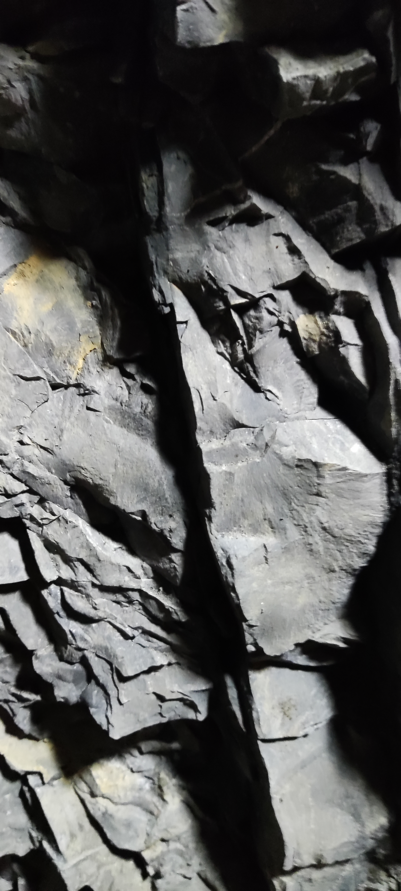
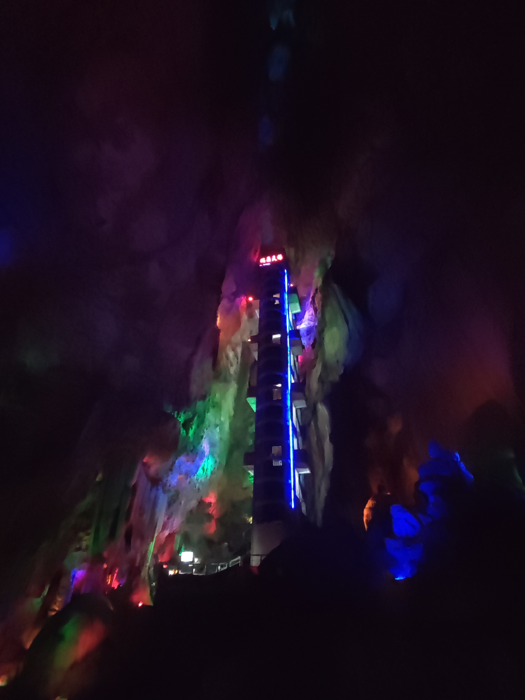
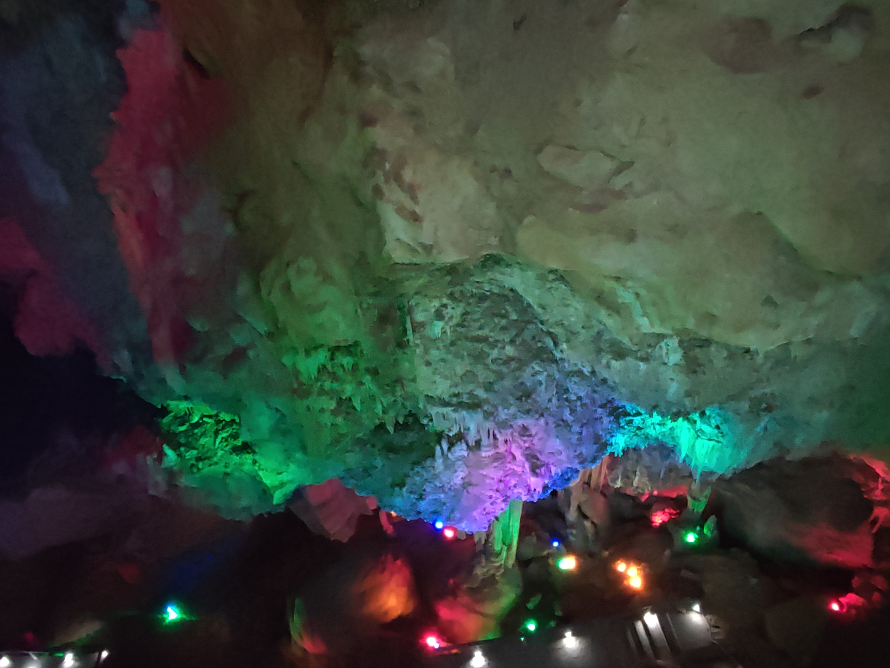
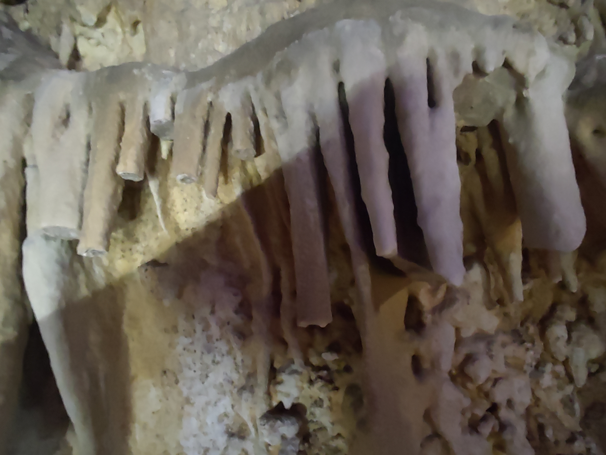
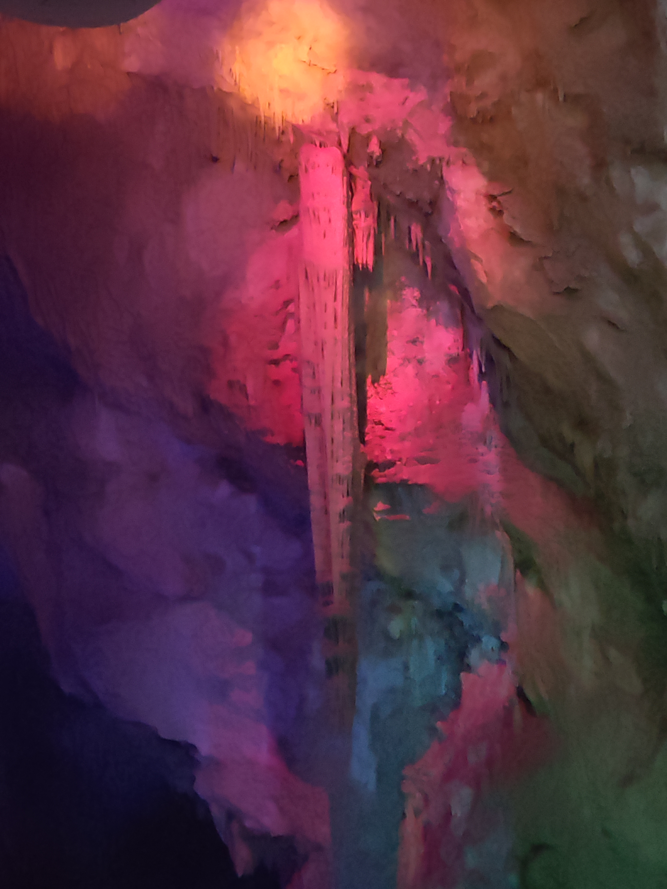
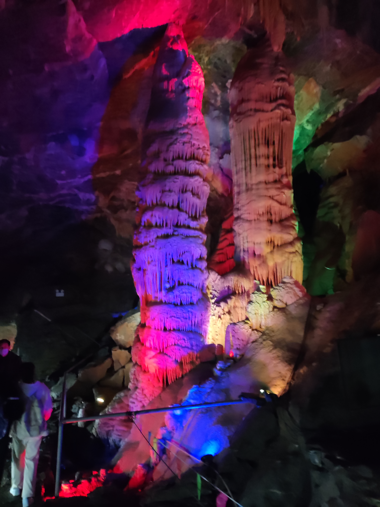
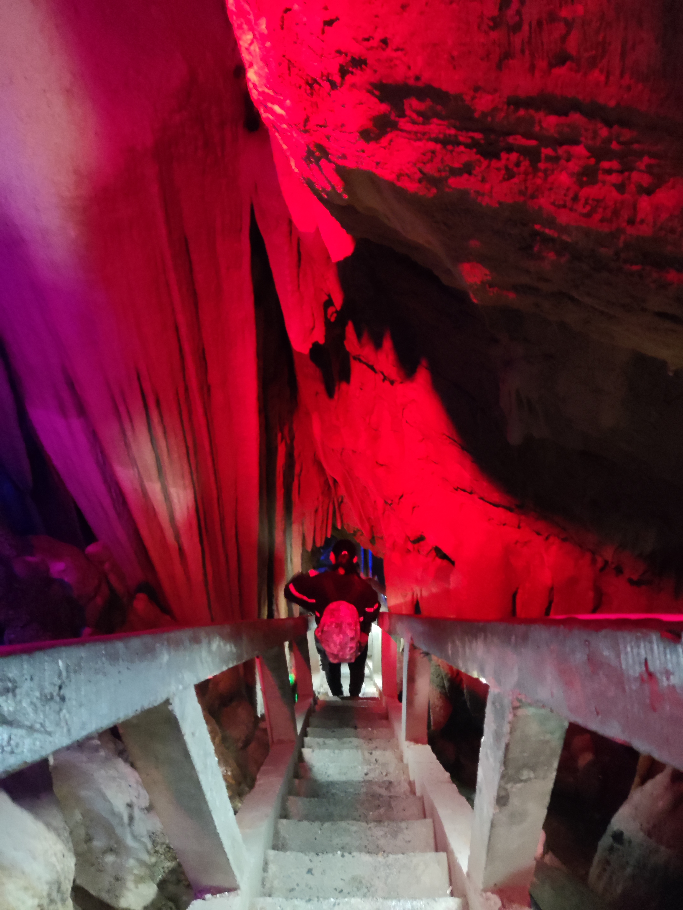
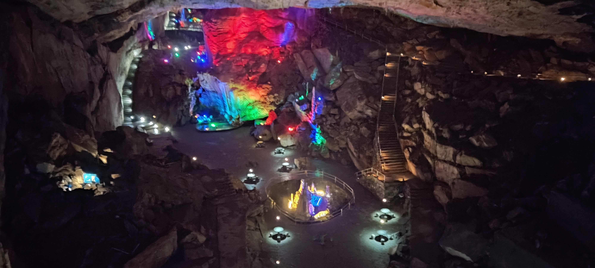

临安瑞晶石花洞研学后记
这篇后记本来是十二月四号当天就应该写的，只是临近期末事情烦多，加上当时确实没什么写文的心，于是便耽搁了两天，今晚才开始动笔。
“阳春烟景万数，大块鬼斧神工”，这是这次研学从瑞晶石花洞（后面简称为瑞晶洞）里出来时我心中最大的感受，仅次于感叹的情绪则是惭愧——对自己学习上的浮躁与知识上的浅薄的深深自愧。
在洞内游逛时，虽然自己有心留意过周围种种，但是却对自己所见者说不出个所以然，回到学校后查阅资料才发现大部分东西都是书上有的，但是我对它们却只有浅显的印象，实在是让人自惭不已。
就在这里简单记一下临安瑞晶洞吧——结合我今日所见与事后所查的资料来说。
瑞晶洞位于临安石瑞乡的山上，准确说法是一片山系的深处，坐车大概需要行驶半小时的山间公路方能抵达。它是一个垂直干溶洞。我高中的地理老师长磊曾经说过，形成喀斯特地貌必不可少的条件是可溶性岩石，如果你们做题时遇见在很高的山上存在着喀斯特地貌，那么这里必然经历过地壳抬升。临安瑞晶洞正属于这种情况——充当它的基质的岩石是泥灰岩（一种过渡性岩石，常分布在石灰岩和粘土岩的过渡带，可认为是特殊的、含泥量较高的石灰岩），彼时的此处在寒武纪时尚是一片汪洋，而这些泥灰岩便是在那个时候沉淀下来的——在漫长的时间长河中，随着地球内力引发的构造运动，海灭而山出，灵长而峰雕，原先瑞晶洞所在处的地下水位因地壳上升河流下切而降低进而转变为干溶洞，与此同时，褶皱裂隙中渗漏的水与石灰岩发生喀斯特作用，不断在岩石的溶蚀与沉淀中雕刻着这个地下世界，最终形成了瑞晶洞。
坐车抵达的是瑞晶洞的开发景区的入口，上面已经说了瑞晶洞是个垂直溶洞，所以去瑞晶洞的入口还需要再爬一段时间的山路。在路上很容易发现周围裸露的石灰岩：

（前往瑞晶洞路上周围裸露的石灰岩，很容易发现岩石上有流水侵蚀的痕迹，石灰岩是最容易被水溶解的碳酸类岩石）
而瑞晶洞的主体岩石便是在它下面的泥灰岩。在瑞晶洞中很容易发现这种岩石：

（在瑞晶洞里面拍摄的泥灰岩，它是整个瑞晶洞的基础）
从瑞晶洞入口进去，首先是瑞晶洞的第一洞天，这是一个落差极大而又开阔的洞穴。从入口进去，便是人工搭建的回旋楼梯，约莫有十几层楼的高度，要到第一洞天的底部便要沿着这栋梯楼拾级而下。

（瑞晶洞第一洞天的梯楼，瑞晶洞的入口便在楼顶，需通过这栋梯楼抵达第一洞天的底部）
在下楼的过程中，很容易看到周围岩壁上生长的石花、未发育成石钟乳的鹅管、石钟乳等溶洞景物。

（岩壁下方侵蚀面上生长着细碎的石花，原谅我当时没注意拍照所以有些糊）

（岩壁上生长的鹅管，它是石钟乳的最初阶段，因其形容看上去极似鹅的毛管而得名。我拍的这几只鹅管不知道被哪些没素质的人折断了。提醒一下看到这里的朋友，鹅管在部分地方是受到保护的，观景不管手，所里管牢饭）

（下楼梯时看到的石钟乳，非常大，让人不禁担心万一它掉下来会不会直接戳死人）
梯楼的尽头——也就是第一洞天的底部，能看到瑰丽异常的溶洞景物全家福。所有溶洞景物中除了月奶石和石盾外都在这张照片里了：石花、鹅管、石钟乳、石柱、石笋、石幔和石旗。

（遍打灯光少几人的全家福）
其他的似乎没什么可说的，景区里对于各种景物都会给它们赋上几个名，但瑞晶洞景区取的各种名都是来自各种神佛仙人的，对于我这种不信神佛不羡仙的人来说实在乏味，故而本文就按下不提。值得一提的是，第一洞天似乎是因为它高阔且接近入口的原因，空气流通性好，是整个瑞晶洞体感湿度最低的地方，空气非常干燥而没有一点儿潮气——这也或许是因为和外界打通了后彻底失去了溶洞发育的条件而造成的？但总归于溶洞本身而言不是好事。失了原有的温压条件，溶洞便已经接近停止发育了。
当然，开发成景区后对我们自然是好的，取自然之物而济当地百姓，是好事。像我这样穷酸的知识分子就是这样子，吃饱了没事撑地悲悯无命之风景而见不到血肉之民生，殊不知自己是靠社会千千万万的人民养活方能有这片闲情去想者想那，也是笑死人——于此之所以废话，只是写到这里再次有了些想法，有无相生难易相成，这世上果然没有圆满的事儿。
不过在这里稍微一提可能会令人略感欣慰的、我个人在第一洞天的一个小发现：地上有水滴蚀的痕迹。

（在第一洞天的人工水泥道上行走时的意外发现，地面上有水滴滴蚀的痕迹，这说明溶洞也许还在发育，当然我不是专业人士，上面所述都是我个人根据自己浅薄的知识做出的猜想）
第一洞天的剩余风景没什么好说的了，基本上就是我上面所说的几种溶洞景观在大自然的伟力下进行各种差异化的排列组合形成不同的景致、然后被后来人命个名的事。在这里就只提一下我拍下来的、第一洞天底部路上见到的一根石笋：

（蠢萌的石柱）
没错，这根一点也不尖、看起来像是上世纪八十年代某个无良工人随便一浇而后被风吹雨打侵蚀得歪歪斜斜的水泥柱是石笋而不是石柱。凡是重力水沉积、从下向上生长的都是石笋。有一说一，这根挺长得挺蠢的。
而石柱在溶洞景观的定义上，是石笋与石柱生长连接碰触后形成的柱体，即石笋和石柱接触后连接形成的柱状体就是石柱。它长这样：

（其实是在第二洞天拍的石柱。石柱长得有点像佛塔。图中的石柱上还生长着石花，或许我可以把它看作长了苔的佛塔？）
石柱往往表面存在沟槽和不同的节。沟槽是由水滴的滑落形成的，而石柱的节则是水滴在滑落时遇见凸出部位时沉积造就的。图中的石柱虽然长得不是很典型，但是节理与沟槽清晰可分。
第一洞天走完后，要穿过一个被石幔半遮的小洞前往第二洞天——一如既往地，瑞金洞再次在这条通道上表明它是一个垂直发育的溶洞，需要继续向下方拾级能抵达第二洞天。

（第二洞天入口和遮挡了大半入口的石幔）

（石幔。石幔是由于温压条件的变化，洞顶的滴水、片状流水或者渗透水中的碳酸钙沿着洞壁或者倾斜的洞顶向下沉淀堆积而成的）

（石幔近拍，怎么讲，看起来很好吃的样子）

（前往第二洞天的陡梯。落差非常大。很佩服当初修这条路的工人，这么陡而窄的路，很难想象当时是如何施工的）
剩余的第二洞天与其他去的洞天没什么特别好讲的了，正文就在这里结尾吧，接下来就纯粹地放一下自己当时拍的一些照片。

（第二洞天掠影。在快到陡梯的尽头时拍摄的，只能说像是一个新世界）

（由于在不断下降，第二洞天及之后的洞天湿度明显地提升，潮湿路段明显增多，空气湿度的提高能为人显著感受到）

（喜欢我蓝漆细颈瓶小石柱吗？）


（地面上各种还在发育的石笋，有点克苏鲁的味道）

（这张照片没有反，纯粹是头顶生长的石钟乳带来的一种视觉差）
.jpg)
（第四洞天是是一个开阔的像是大厅一样的洞穴，这里景区巧妙地通过桌椅和悬灯把它打造成了一个小公园，非常不错的设计）
.jpg)
（每张桌子上面有个悬灯）
.jpg)
（只要巧妙地调整相机光线，便能拍摄出一种光芒浮动在桌上的感觉，值得表扬）

（因为相机神奇的光线渲染而拍摄的第四洞天全景，像是在梦中一般）
参考文献：
[1]竺国强.瑞晶洞石花奇观科学鉴赏[J].风景名胜,2000(04):8-9.
[2]刘大培.千姿百态 神仙世界——临安瑞晶洞考察记[J].今日科技,1998(02):29.
[3]北京大学新一代GIS研究室.溶洞现象描述[Z].gis4g.pku.edu.cn/cave-main/溶洞现象描述